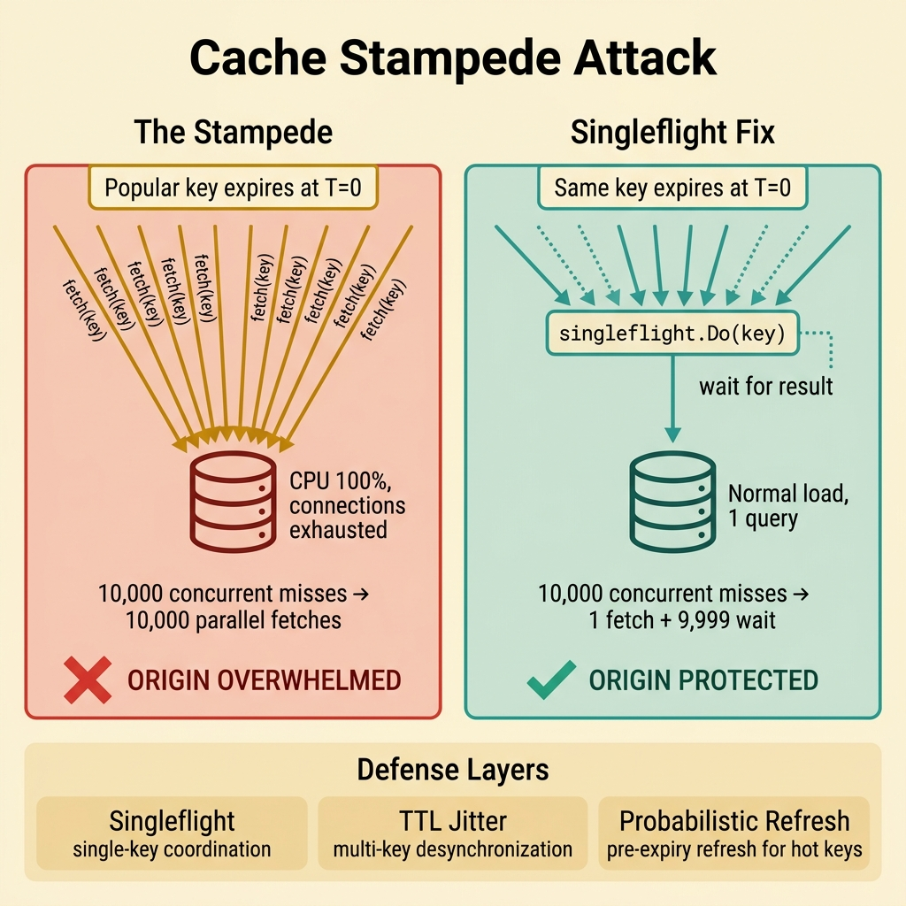
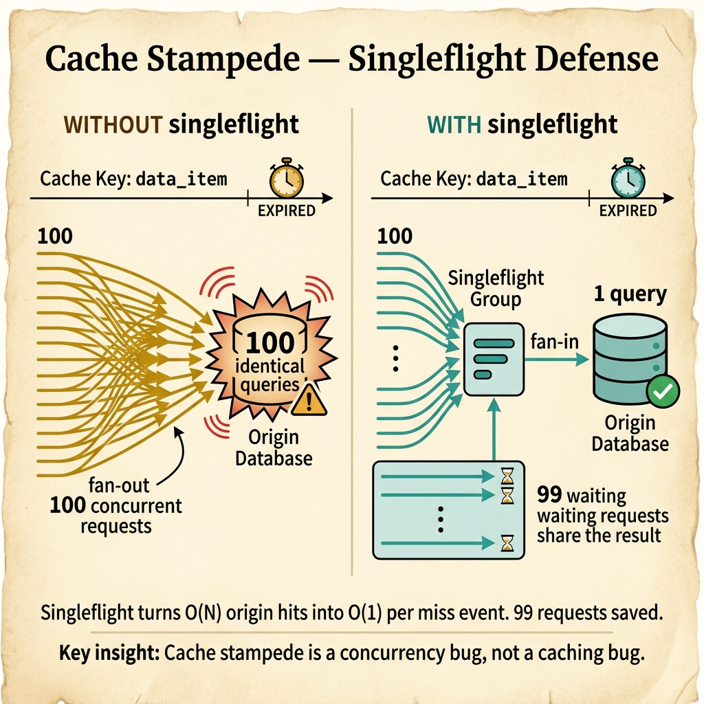

golang.org/x/sync/singleflight
Singleflight là một mẫu thiết kế đồng bộ (synchronization pattern) cực kỳ mạnh mẽ trong Go, được phát triển chính thức trong thư viện phụ trợ của Go team (golang.org/x/sync/singleflight). Mẫu thiết kế này đảm bảo rằng đối với một định danh tác vụ (key) cụ thể, tại một thời điểm chỉ có tối đa 1 luồng xử lý thực thi thực tế.
Nếu có N goroutines đồng thời gọi yêu cầu cùng 1 key xử lý đó khi tác vụ đầu tiên đang diễn ra (in-flight), N-1 goroutines còn lại sẽ được chặn (block), chờ đợi và chia sẻ chung kết quả từ luồng chạy duy nhất đó mà không kích hoạt thêm bất kỳ thao tác downstream nào (DB query, API call...).
Tại sao cần Singleflight?
Khi xây dựng các hệ thống API có lưu lượng truy cập cao (high-traffic API), việc sử dụng bộ nhớ đệm (caching) là bắt buộc. Tuy nhiên, khi một **Hot Key** (dữ liệu được hàng nghìn request đọc mỗi giây) hết hạn (Expired), hoặc khi hệ thống vừa khởi động lại (Cold Start), một thảm họa hệ thống sẽ xảy ra nếu không có cơ chế bảo vệ:
Cache hết hạn → 10,000 requests cùng lúc phát hiện Cache Miss → 10,000 DB queries chạy đồng thời. Database bị sập tải lập tức, gây ra mất điện diện rộng (cascade outage).
Nhiều luồng xử lý cùng bị đánh thức bởi một sự kiện và đồng thời tranh giành một tài nguyên giới hạn, gây hao tổn tài nguyên CPU cực lớn do tranh chấp lock (lock contention).
Duy nhất 1 lệnh HTTP GET hoặc gRPC được truyền đi, gom toàn bộ các luồng gọi trùng lặp về một kết quả, giảm thiểu 99% chi phí băng thông mạng.
Triệt tiêu việc khởi tạo hàng ngàn cấu trúc dữ liệu trùng lặp trên Heap cho các tác vụ trung gian, giảm tải cực lớn cho chu kỳ dọn rác của Go Runtime.
So sánh định vị: Cache vs Mutex vs Singleflight
| Cơ chế | Mục đích chính | Phạm vi bảo vệ (Scope) | Đặc tính chặn (Blocking) |
|---|---|---|---|
| Cache | Lưu trữ kết quả để tái sử dụng lâu dài | Theo thời gian (TTL), xuyên suốt các request độc lập | Không chặn luồng gọi. Trả về kết quả cũ/mới ngay lập tức |
| Mutex (sync.Mutex) | Bảo vệ bộ nhớ dùng chung (Shared State) | Độc quyền truy cập, tuần tự hoá toàn bộ luồng gọi | Chặn toàn bộ trừ 1. Bắt buộc tất cả phải lần lượt thực thi |
| Singleflight | Gộp các thao tác in-flight trùng lặp | Chỉ tác động lên các luồng gọi đồng thời (concurrent) | Chặn các luồng gọi trùng lặp, giải phóng đồng loạt cùng lúc |
Package golang.org/x/sync/singleflight được cài đặt vô cùng đơn giản qua command:
go get golang.org/x/sync/singleflight. Đây là thư viện bổ trợ chuẩn mực, được Go team thiết kế tỉ mỉ để tối ưu hoá hiệu năng ứng dụng.
Cơ chế Collapse trùng lặp của Singleflight
Cấu trúc dữ liệu nội tại (Internal Struct)
Hãy phân tích cấu trúc mã nguồn thực tế của thư viện singleflight để hiểu cơ chế thiết kế cực kỳ thông minh này:
package singleflight import "sync" // call đại diện cho một tác vụ in-flight hoặc đang hoàn tất type call struct { wg sync.WaitGroup // Đồng bộ hoá toàn bộ các waiter chờ đợi val interface{} // Kết quả trả về của fn() err error // Lỗi trả về của fn() // Đếm số lượng waiter thực sự để ghi nhận xem kết quả có shared hay không dups int chans []chan<- Result // Phục vụ cho hàm DoChan non-blocking } // Group đại diện cho một lớp điều phối xử lý Singleflight, cô lập theo key type Group struct { mu sync.Mutex // Bảo vệ tính toàn vẹn của bảng map bên dưới m map[string]*call // Bảng theo dõi các khoá đang chạy }
Bí thuật của sync.WaitGroup: Singleflight không phát minh ra cơ chế luồng chờ đợi phức tạp. Nó tận dụng cấu trúc căn bản nhất của Go là sync.WaitGroup. Goroutine đầu tiên (chạy thực tế) sẽ gọi wg.Add(1). Các Goroutine gọi sau chỉ cần kiểm tra sự tồn tại của key trong map và gọi wg.Wait() để chặn hàng chờ. Khi chủ sở hữu chạy xong, gọi wg.Done(), toàn bộ waiters được Go Scheduler đánh thức đồng loạt để trả kết quả!
Hệ thống E-Commerce của bạn có lượng traffic cực cao. Key thông tin chi tiết sản phẩm product:123 hết hạn trong Cache. Ngay tại microsecond đó, 100 requests đồng thời ập vào API gateway của bạn.
Nếu không xử lý tốt, cả 100 luồng API sẽ đồng loạt kết nối tới Postgres để đọc dữ liệu. Điều này lãng phí tài nguyên CPU của DB, tăng latency lên gấp nhiều lần và đe dọa trực tiếp đến sự ổn định của cụm Database Master.

package main import ( "fmt" "sync" "sync/atomic" "time" "golang.org/x/sync/singleflight" ) var ( dbQueryCount atomic.Int64 // Đếm số lần thực sự query Database sfGroup singleflight.Group // Singleflight coordinator ) // queryProductFromDB mô phỏng thao tác đọc Database chậm chạp và đắt đỏ func queryProductFromDB(id string) (string, error) { dbQueryCount.Add(1) fmt.Printf(" 🗄️ [DB ACCESS] Querying product %s (actual query #%d)\n", id, dbQueryCount.Load()) time.Sleep(200 * time.Millisecond) // Giả lập latency của DB return fmt.Sprintf("Product{id: %s, name: 'Sơn Tùng M-TP Album'}", id), nil } // getProductDetails bảo vệ DB thông qua Singleflight gộp request func getProductDetails(productID string) (string, error) { // ━━━━━━━━━━━━━━━━━━━━━━━━━━━━━━━━━━━━━━━━━ // Do(key, fn): // - Đối số key: "prod:"+productID - gom nhóm tác vụ trùng key // - fn: Hàm lấy data thực tế, chỉ chạy 1 lần nếu trùng key cùng thời điểm // Trả về: // - val: Kết quả trả về của fn (phải ép kiểu từ interface{}) // - err: Lỗi nếu có // - shared: bool ghi nhận xem kết quả này có được dùng chung với luồng khác hay không // ━━━━━━━━━━━━━━━━━━━━━━━━━━━━━━━━━━━━━━━━━ val, err, shared := sfGroup.Do("prod:"+productID, func() (interface{}, error) { return queryProductFromDB(productID) }) if err != nil { return "", err } if shared { fmt.Println(" ♻️ [SINGLEFLIGHT COLLAPSED] Trả về kết quả shared thành công cho luồng khác!") } return val.(string), nil } func main() { fmt.Println("=== BẮT ĐẦU: 100 requests đọc dữ liệu cùng lúc ===") var wg sync.WaitGroup for i := 0; i < 100; i++ { wg.Add(1) go func(reqID int) { defer wg.Done() _, err := getProductDetails("album-99") if err != nil { fmt.Printf("Request %d: Lỗi %v\n", reqID, err) } }(i) } wg.Wait() fmt.Printf("\n📊 KẾT QUẢ: Tổng số lần thực tế gọi tới Database: %d / 100 requests\n", dbQueryCount.Load()) fmt.Printf("💡 Tiết kiệm thành công %d%% lưu lượng truy vấn Database!\n", (100-dbQueryCount.Load())) }
Note & Conclusion: Ví dụ cơ bản trên đã chứng minh sức mạnh của Singleflight: 100 requests đồng thời chỉ sinh ra duy nhất 1 query DB. Tuy nhiên cần lưu ý: Singleflight không phải là Cache. Ngay sau khi tác vụ đầu tiên kết thúc thành công, khoá prod:album-99 sẽ lập tức bị xoá bỏ khỏi map quản lý nội bộ. Request thứ 101 gửi tới sau đó 1 microsecond sẽ kích hoạt một query DB hoàn toàn mới.
Trong ứng dụng thực tế, chỉ dùng Singleflight chay là không đủ. Khi có hàng triệu requests, luồng đi chuẩn chỉnh phải là: Kiểm tra bộ nhớ đệm (Cache) → Nếu Miss → Đưa vào Singleflight → Đọc DB → Ghi đè vào Cache → Trả về kết quả.
Tuy nhiên, có một kẽ hở nguy hiểm: Giữa thời điểm Goroutine kiểm tra Cache bị Miss và thời điểm nó chui được vào hàm thực thi của singleflight.Do(), rất có thể một Goroutine khác đã hoàn thành việc ghi dữ liệu mới vào Cache trước đó. Nếu không áp dụng mẫu thiết kế Double-check Locking bên trong Singleflight, chúng ta vẫn sẽ sinh ra các câu lệnh DB dư thừa không cần thiết.

package main import ( "fmt" "sync" "sync/atomic" "time" "golang.org/x/sync/singleflight" ) // MemoryCache là một In-memory Cache đơn giản có giới hạn thời gian (TTL) type CacheEntry struct { value string expiresAt time.Time } type MemoryCache struct { mu sync.RWMutex store map[string]CacheEntry } func NewMemoryCache() *MemoryCache { return &MemoryCache{store: make(map[string]CacheEntry)} } func (c *MemoryCache) Get(key string) (string, bool) { c.mu.RLock() defer c.mu.RUnlock() entry, found := c.store[key] if !found || time.Now().After(entry.expiresAt) { return "", false } return entry.value, true } func (c *MemoryCache) Set(key, value string, ttl time.Duration) { c.mu.Lock() defer c.mu.Unlock() c.store[key] = CacheEntry{ value: value, expiresAt: time.Now().Add(ttl), } } // UserProductionService thiết kế kết hợp 3 lớp vững chãi type UserProductionService struct { cache *MemoryCache sfGroup singleflight.Group dbHits atomic.Int64 } func NewUserService() *UserProductionService { return &UserProductionService{cache: NewMemoryCache()} } func (s *UserProductionService) GetUserData(userID string) (string, error) { cacheKey := "user:" + userID // ━━━ LỚP 1: Kiểm tra bộ nhớ đệm (Cache HIT) ━━━ if val, ok := s.cache.Get(cacheKey); ok { return val, nil } // ━━━ LỚP 2: Cache Miss - Tiến hành Singleflight gộp luồng ━━━ val, err, _ := s.sfGroup.Do(cacheKey, func() (interface{}, error) { // ━━━ LỚP DOUBLE-CHECK ━━━ // Khi goroutine bắt đầu thực thi hàm chạy thực tế này, có khả năng // là một goroutine khác vừa ghi đè dữ liệu vào cache trước đó. // Kiểm tra lại cache một lần nữa để triệt tiêu query DB! if val, ok := s.cache.Get(cacheKey); ok { return val, nil } // ━━━ LỚP 3: Thực sự chọc tới Database (Đắt đỏ) ━━━ s.dbHits.Add(1) fmt.Printf(" 🔥 [DB QUERY RUN] Đọc thông tin User %s từ Postgres DB...\n", userID) time.Sleep(100 * time.Millisecond) // Simulate slow query userData := fmt.Sprintf("User_Payload{id: %s, active: true}", userID) // Lưu kết quả vào Cache để phục vụ các yêu cầu tiếp theo s.cache.Set(cacheKey, userData, 5*time.Second) return userData, nil }) if err != nil { return "", err } return val.(string), nil } func main() { svc := NewUserService() var wg sync.WaitGroup fmt.Println("--- WAVE 1: Cache lạnh hoàn toàn, 50 requests đồng thời ---") for i := 0; i < 50; i++ { wg.Add(1) go func() { defer wg.Done() svc.GetUserData("999") }() } wg.Wait() fmt.Printf("👉 DB hits sau Wave 1: %d (Tiết kiệm 49 DB queries!)\n\n", svc.dbHits.Load()) fmt.Println("--- WAVE 2: Cache ấm, thêm 50 requests mới đột nhập ---") for i := 0; i < 50; i++ { wg.Add(1) go func() { defer wg.Done() svc.GetUserData("999") }() } wg.Wait() fmt.Printf("👉 DB hits sau Wave 2: %d (Cache đã phục vụ 100%% requests Wave 2!)\n", svc.dbHits.Load()) }
Note & Conclusion: Đây là mẫu thiết kế xương sống của mọi thư viện cache chuyên nghiệp trong production. Sử dụng quy tắc "Double-check" bên trong closure của Do sẽ đảm bảo việc truy cập Database bằng không nếu dữ liệu đã được nạp trước đó từ luồng chạy song song trước. Rất trực quan và an toàn!
Hàm Do() cơ bản của Singleflight là hàm **Đồng bộ và Chặn luồng (Blocking)**. Nghĩa là tất cả các Goroutine Waiter bắt buộc phải chờ đến khi tác vụ chạy chính hoàn tất.
Điều gì xảy ra nếu hệ thống downstream của bạn (ví dụ: DB hoặc API thanh toán bên thứ ba) bị treo và mất tới 30 giây để phản hồi? Toàn bộ hàng ngàn luồng xử lý đồng thời trong Server của bạn cũng sẽ bị treo cứng tại Do(), làm cạn kiệt tài nguyên Server và kéo sập Service.
Yêu cầu: Mỗi client phải có quyền tự chủ thời gian chờ (Timeout) của riêng mình. Nếu quá 1 giây không phản hồi, client cần fallback ngay, nhưng luồng xử lý dữ liệu chính vẫn tiếp tục chạy ngầm để nạp cache cho tương lai mà không bị gián đoạn hay huỷ bỏ vô tổ chức.
package main import ( "context" "fmt" "time" "golang.org/x/sync/singleflight" ) var sfGroup singleflight.Group // slowDBQuery mô phỏng một truy vấn DB bị treo khoảng 3 giây func slowDBQuery() (string, error) { time.Sleep(3 * time.Second) return "DB_HEAVY_RESULT", nil } func getProductWithTimeout(ctx context.Context, key string) (string, error) { // ━━━━━━━━━━━━━━━━━━━━━━━━━━━━━━━━━━━━━━━━━ // DoChan(key, fn): // Thay vì chặn luồng đồng bộ, DoChan trả về ngay một Go Channel // nhận về cấu trúc singleflight.Result khi hoàn thành. // ━━━━━━━━━━━━━━━━━━━━━━━━━━━━━━━━━━━━━━━━━ ch := sfGroup.DoChan(key, func() (interface{}, error) { return slowDBQuery() }) // Sử dụng select-case kết hợp Channel trả về và Timeout để tự chủ quyết định thời gian chờ select { case res := <-ch: // Tác vụ chạy thành công trong giới hạn thời gian cho phép if res.Err != nil { return "", res.Err } return res.Val.(string), nil case <-ctx.Done(): // Client hết kiên nhẫn và Timeout đã kích hoạt! // ⚠️ Cực kỳ quan trọng: Gọi Forget(key) ngay lập tức! // Nếu không gọi Forget, các request đến sau này vẫn sẽ bị ánh xạ tiếp vào // goroutine cũ bị treo, tiếp tục gây lỗi dây chuyền liên tục. sfGroup.Forget(key) return "FALLBACK_DEFAULT_VALUE", ctx.Err() } } func main() { fmt.Println("=== Bắt đầu chạy test timeout với DoChan ===") start := time.Now() // Thiết lập Client chỉ chấp nhận chờ đợi trong 1 giây ctx, cancel := context.WithTimeout(context.Background(), 1*time.Second) defer cancel() val, err := getProductWithTimeout(ctx, "slow-key") fmt.Printf("⏱️ Sau %v:\n", time.Since(start)) fmt.Printf(" 👉 Kết quả trả về cho Client: %s\n", val) fmt.Printf(" 👉 Chi tiết lỗi: %v\n\n", err) // Đợi thêm 3 giây để Goroutine chạy ngầm kết thúc time.Sleep(3 * time.Second) fmt.Println("✅ Kết thúc thành công, luồng xử lý hoàn thành êm đẹp.") }
Bản chất của Forget(key): Khi một waiter thoát ra sớm do Timeout, Goroutine thực thi gốc vẫn tiếp tục chạy ngầm trong Server để xử lý và cuối cùng ghi kết quả vào Cache. Bắt buộc phải gọi Forget(key) tại thời điểm Timeout để xoá bỏ ánh xạ khoá bị lỗi, cho phép các request đến sau có cơ hội thử kích hoạt một luồng truy vấn mới thay vì tiếp tục cắm đầu chờ đợi một Goroutine "bị hỏng".
Trong hệ thống chịu tải triệu CCU (Concurrent Users), dữ liệu được tổ chức theo mô hình Cache Phân Lớp (Multi-layer caching): L1 Cache (In-Memory cục bộ) → L2 Cache (Redis Cluster tập trung) → Singleflight Protection → GORM Engine (PostgreSQL Master-Slave).
Nếu hàng vạn request tràn qua L1, quét sạch L2 do Cache Miss đột ngột, ta bắt buộc phải gộp luồng bằng Singleflight trước khi gọi tới GORM. Khi một sản phẩm được cập nhật giá từ Admin Panel, ta cần thực hiện quy trình Invalidate Cache an toàn tuyệt đối trên cả Redis, Local Cache và tháo dỡ Singleflight lập tức để cập nhật giá mới ngay.
package main import ( "context" "encoding/json" "errors" "fmt" "log" "time" "github.com/redis/go-redis/v9" "golang.org/x/sync/singleflight" "gorm.io/driver/postgres" "gorm.io/gorm" ) // Product là thực thể đại diện cho bảng sản phẩm trong PostgreSQL type Product struct { ID uint `gorm:"primaryKey"` SKU string `gorm:"column:sku;uniqueIndex"` Name string Price float64 Stock int UpdatedAt time.Time } // ProductEnterpriseService tích hợp toàn diện 3-Layer bảo vệ cực hạn type ProductEnterpriseService struct { db *gorm.DB rdb *redis.Client sfGroup singleflight.Group } func NewProductService(db *gorm.DB, rdb *redis.Client) *ProductEnterpriseService { return &ProductEnterpriseService{db: db, rdb: rdb} } // GetProductDetails xử lý lấy dữ liệu phân lớp tinh tế func (s *ProductEnterpriseService) GetProductDetails(ctx context.Context, id uint) (*Product, error) { redisKey := fmt.Sprintf("cache:product:%d", id) // ━━━ LỚP 1: Đọc từ Redis Cluster (L2 Cache) ━━━ // Rất nhanh, chỉ mất ~0.5ms - 2ms cachedData, err := s.rdb.Get(ctx, redisKey).Bytes() if err == nil { var prod Product if json.Unmarshal(cachedData, &prod) == nil { log.Printf("🚀 [REDIS HIT] Phục vụ từ Redis cho key %s\n", redisKey) return &prod, nil } } // ━━━ LỚP 2: Kích hoạt Singleflight gộp luồng đọc DB ━━━ val, err, shared := s.sfGroup.Do(redisKey, func() (interface{}, error) { // Doublecheck lại Redis phòng trường hợp luồng song song vừa ghi đè cachedDataDouble, errDouble := s.rdb.Get(ctx, redisKey).Bytes() if errDouble == nil { var prod Product if json.Unmarshal(cachedDataDouble, &prod) == nil { return &prod, nil } } // ━━━ LỚP 3: GORM chọc thẳng vào Postgres DB Master (Source of Truth) ━━━ log.Printf("🔥 [DB ACCESS] Querying database Postgres cho key %s...\n", redisKey) var product Product if errDB := s.db.WithContext(ctx).First(&product, id).Error; errDB != nil { return nil, fmt.Errorf("sản phẩm %d không tồn tại: %w", id, errDB) } // Ghi ngược lại Redis không chặn luồng chính (Async Write Cache) go func(p Product) { bytesPayload, _ := json.Marshal(p) s.rdb.Set(context.Background(), redisKey, bytesPayload, 15*time.Minute) }(product) return &product, nil }) if err != nil { return nil, err } if shared { log.Printf("♻️ [SINGLEFLIGHT COLLAPSED] Gộp thành công request đọc Postgres cho key %s!\n", redisKey) } return val.(*Product), nil } // UpdateProductState: Thực hiện quy trình cập nhật dữ liệu và Invalidate Cache an toàn func (s *ProductEnterpriseService) UpdateProductState(ctx context.Context, product *Product) error { // 1. Cập nhật dữ liệu vào DB trước if err := s.db.WithContext(ctx).Save(product).Error; err != nil { return err } redisKey := fmt.Sprintf("cache:product:%d", product.ID) // 2. Xoá khoá trong Redis Cluster ngay s.rdb.Del(ctx, redisKey) // 3. Buộc Singleflight xoá ngay ánh xạ để các request mới lấy chính xác giá vừa update s.sfGroup.Forget(redisKey) log.Printf("✅ [INVALIDATE CACHE SUCCESS] Khoá sạch %s thành công!\n", redisKey) return nil }
Note & Conclusion: Đây là kiến trúc tối thượng dành cho hệ thống cấp cao. Việc phối hợp giữa Redis phân tán, Singleflight gom luồng in-flight và GORM ORM giúp bảo vệ database an toàn tối đa dưới mọi áp lực tải trọng cực đoan. Lưu ý: Luôn gọi Forget() khi invalidate dữ liệu để tránh đưa thông tin giá cũ ra màn hình!
Singleflight mặc định chia sẻ **cả dữ liệu lẫn lỗi**. Nếu goroutine chủ chọc xuống DB bị đứt mạng hoặc gặp lỗi tạm thời (Transient Error), **toàn bộ 1,000 waiter khác cũng sẽ đồng loạt nhận về đúng lỗi đó** mà không hề thử lại!
Nguy cơ sập dây chuyền
Nếu nhận về lỗi, waiter hoặc client cần bắt lỗi ngay, chủ động gọi hàm Forget(key) hoặc tự thân thực hiện cơ chế Backoff-Retry một lần nữa để giải toả luồng tắc nghẽn.
| STT | Lỗi phổ biến | Hệ quả vận hành | Biện pháp khắc phục chuẩn chỉnh |
|---|---|---|---|
| 1 | Dùng chung 1 Group Singleflight cho toàn bộ ứng dụng | Key trùng lắp chéo giữa các miền nghiệp vụ gây xung đột và gộp nhầm kết quả sai loại | Khởi tạo các đối tượng singleflight.Group độc lập cho từng Repository hoặc API domain riêng biệt |
| 2 | Quên không gọi Forget(key) khi kích hoạt luồng chạy ngầm ghi Cache |
Key in-flight tồn tại vô thời hạn nếu Goroutine chủ bị rò rỉ hoặc bị kẹt vô tận trong I/O | Luôn bọc hàm I/O trong Context Timeout thích hợp và tự động huỷ bỏ qua Forget() khi gặp Timeout |
| 3 | Gộp luồng cho các tác vụ nhạy cảm của từng cá nhân (Personalized Data) | Người dùng A có thể xem nhầm thông tin cá nhân của người dùng B do gộp nhầm key chung | Chỉ áp dụng Singleflight cho dữ liệu tĩnh hoặc dữ liệu chung (Public Product, Global Config). Phải nhúng userID vào Key nếu gộp thông tin cá nhân! |
Cảnh giác với rò rỉ Goroutine: Do Singleflight giữ chân các Goroutine bằng WaitGroup bên trong, nếu Goroutine chính thực hiện query DB bị treo không có Timeout (không dùng context), toàn bộ các Goroutine chờ đợi phía sau cũng sẽ bị kẹt vĩnh viễn trên Heap, gây ra lỗi rò rỉ bộ nhớ (Memory Leak) nghiêm trọng nhất trong Go.
Tóm tắt cốt lõi: singleflight là vũ khí tối thượng giúp giảm thiểu tải trọng Database và ngăn ngừa sập hệ thống (outage) khi xảy ra Cache Miss dây chuyền. Hãy ghi nhớ quy tắc: (1) Luôn bọc trong Timeout thông qua DoChan, (2) Luôn Double-check Cache bên trong closure, (3) Chủ động gọi Forget() khi gặp lỗi hoặc khi cập nhật dữ liệu mới!